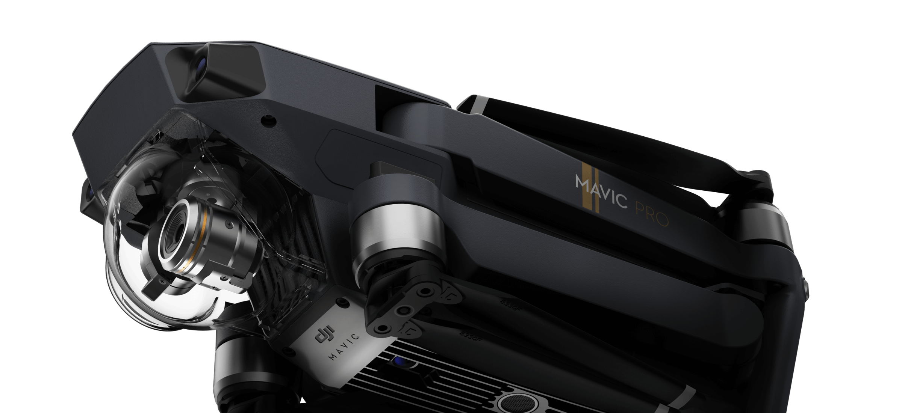

| 飞行器 | 相机 | ||
|---|---|---|---|
| 尺寸 | 83 x 83 x 198mm（高x宽x长） | 影像传感器 | 1/2.3 英寸 CMOS；有效像素1235万（总像素1271万） |
| 轴距 | 335 mm | 镜头 | FOV 78.8° 26 mm（35 mm 格式等效） f/2.2 对焦点：0.5 m至无穷远；畸变<1.5% |
| 重量（含电池及桨） | 734 g（不包含云台保护罩） 743 g（包含云台保护罩） |
ISO范围 | 视频：100 - 3200 |
| 最大上升速度 | 运动模式：5 m/s | 电子快门速度 | 8 - 1/8000 秒 |
| 最大下降速度 | 3 m/s | 照片尺寸 | 4000×3000 |
| 最大水平飞行速度 | 65 km/h（运动模式，海平面附近无风环境） | 照片拍摄模式 | 单张拍摄 多张连拍（BURST）：3/5/7 张 自动包围曝光（AEB）：3/5 张@0.7EV 步长 定时拍摄 |
| 最大起飞海拔高度 | 5000 m | 录像分辨率 | C4K: 4096×2160 24p 2.7K: 2720x1530 24/25/30p FHD: 1920×1080 24/25/30/48/50/60/96p 4K: 3840×2160 24/25/30p HD: 1280×720 24/25/30/48/50/60/120p |
| 最大飞行时间 | 27 分钟（无风环境 25 km/h 匀速飞行） | 视频最大码流 | 60 Mbps |
| 遥控器 | WI-FI模式 | ||
| 工作频率 | 2.4 GHz 至 2.483 GHz | 工作频段 | 2.4G/5G |
| 最大信号有效距离 | FCC: 7000 m；CE: 4000 m；SRRC: 4000 m（无干扰、无遮挡） | 最大信号有效距离 | 水平80m，高度50m（无干扰、无遮挡） |
| 工作环境温度 | 0°C至40°C | 最大水平飞行速度 | 14 km/h (9 mph) |
| 电池 | 2970mAh | 最大上升速度 | 6.6 ft/s(2 m/s) |
| 等效全向辐射功率（EIRP） | FCC：≤26 dBm CE：≤20 dBm SRRC: <=20dBm |
最大下降速度 | 3.3 ft/s(1 m/s) |
| 工作电流/电压 | 950mA @ 3.7V | ||
| 移动设备支架 | 厚度6.5-8.5 mm，最大长度160 mm 接口类型：Lightning, Micro USB (Type-B), USB Type-C™ |
